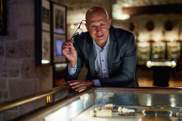
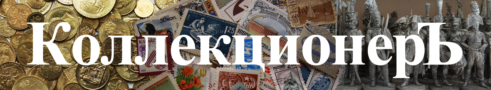

Мы заинтересуем Вас, если Вы:
Упростите документооборот и сохраните историю каждого предмета в цифре
Наше решение:
Цифровой инвентарь – удобный учет с фото, описанием, историей.
Групповой
доступ – для кураторов, реставраторов, архивистов.
Экспорт данных для госучетов.
QR-метки –
быстрый доступ к информации об экспонате.
Инвестируйте осознанно – с аналитикой и удобным управлением активами.
Наше решение:
Тренды и аналитика – отчеты по росту/падению цен на категории предметов.
Портфель
инвестиций – автоматический расчет стоимости коллекции.
Прогнозы – на основе исторических
данных и экспертных оценок.

Коллекционеры-профессионалы
Полный контроль над коллекцией – от оценки до продажи, без риска потери данных.
Наше решение:
История предмета – запись о предыдущих владельцах, реставрациях, выставках.
Анализ
стоимости – графики изменения цены, сравнение с аналогами.
Защита данных – двухфакторная
аутентификация, приватные коллекции.
Доступ с ПК, планшета, телефона в любое время.
Больше не нужно вести учет в тетрадках или Excel – все данные в одном месте, с защитой и удобным
поиском.
Наше решение:
Простая каталогизация – загружайте предметы в удобную базу с автоматическим
учетом (фото, описание, категории).
Облачное хранение – доступ к коллекции с любого
устройства, резервное копирование.
Готовые шаблоны для разных типов коллекций (марки, монеты,
книги) с подсказками по заполнению.
Поиск по параметрам – фильтры по году, стране, редкости,
сериям.
Почему стоит выбрать нашу платформу?
Создание пользовательских типов коллекций
Личный кабинет с аналитикой
Гибкие варианты сортировки
Умная система рекомендаций
Ваша коллекция
начинается здесь
«Идея создания такой платформы появилась, когда я сама столкнулась с проблемой учета коллекции. Существующие
решения были либо слишком сложными, либо не учитывали специфику коллекционирования. Мы хотели сделать простой,
но мощный инструмент, который объединит людей с общим увлечением и поможет им систематизировать свои
собрания.»
Теплинская Александрина Николаевна
руководитель проекта
